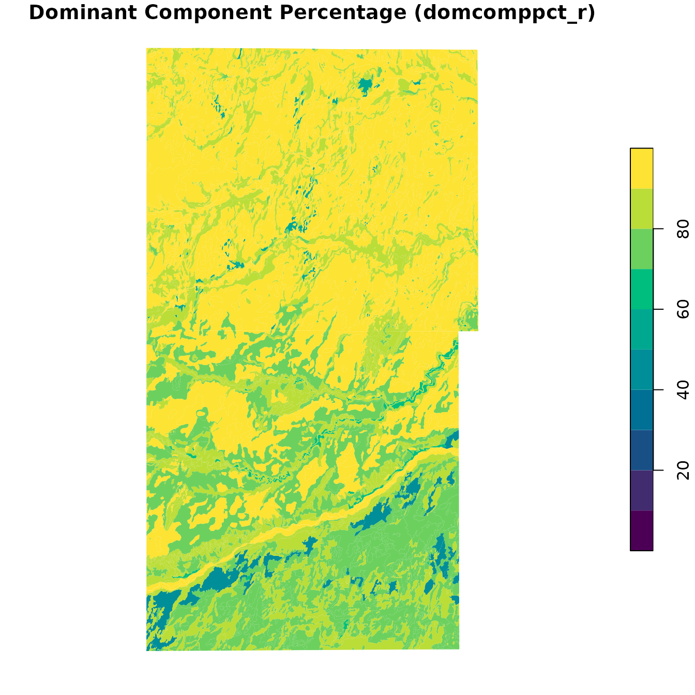
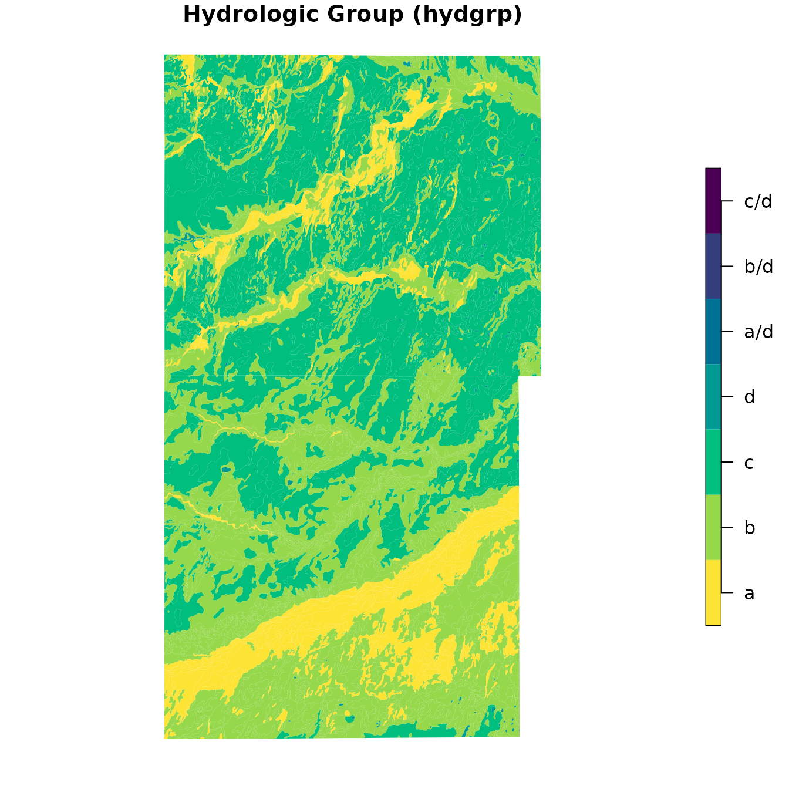
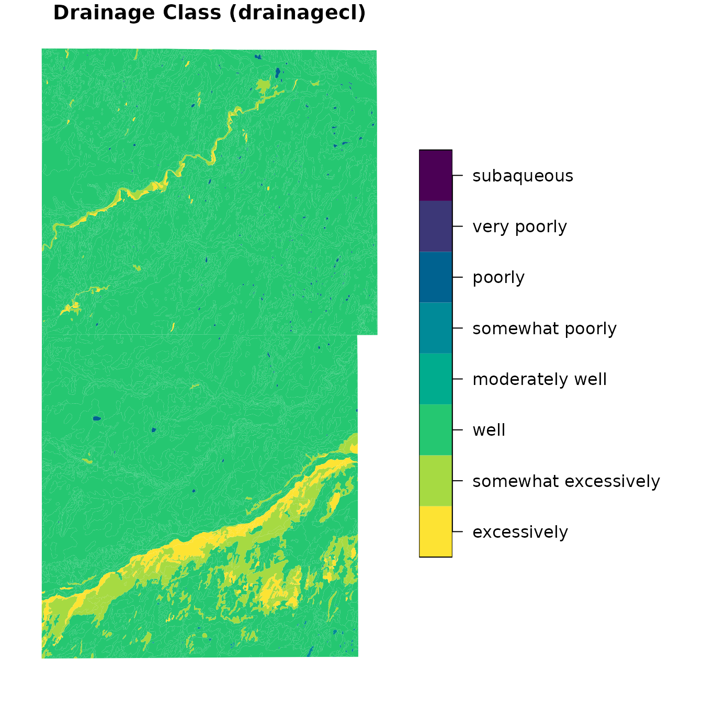

Overview
The soilDB package provides tools for accessing and
working with soil survey data from the USDA-NRCS. Two key functions,
downloadSSURGO() and createSSURGO(),
streamline the process of acquiring and preparing Soil Survey Geographic
database (SSURGO) data into a local SQLite (GeoPackage) database–similar
to the functionality offered by SSURGO
Portal.
This vignette demonstrates how to use these functions to obtain and
view data from Morton and Stanton counties, Kansas
(areasymbol = c("KS129", "KS187")).
Download SSURGO Data
downloadSSURGO() will download the official SSURGO data
from Web Soil Survey for the specified areasymbol and
return the path to the ZIP archives.
library(soilDB)
gpkg_dir <- tempdir()
AREASYMBOLS <- c("KS129", "KS187")
ssurgo_zip <- downloadSSURGO(
areasymbol = AREASYMBOLS,
destdir = gpkg_dir
)Here we specify just two soil survey areas of interest using the “area symbol.” Generally, this is a 2-letter state code and a 3-digit county FIPS code or other identifier.
There are more options to specify the area of interest. Any SQL WHERE
clause that targets the sacatalog (Soil Survey Area
Catalog) table can be used.
For example, to do all soil survey areas in Kansas, instead of
areasymbol we could set
WHERE = "areasymbol LIKE 'KS%'". Alternately,
WHERE can be any R spatial object, which is passed to
SDA_spatialQuery() to determine area symbols of
interest.
We specify destdir as the destination directory to
download area-specific ZIP files.
If unspecified, exdir,the directory the ZIP files get
extracted to, is the same as destdir. If you want to keep
the ZIP files and extracted data, set destdir. If you only
want the extracted data, set exdir. If you want both to be
kept only temporarily in order to create a new database, leave
destdir as the default (tempdir()).
Create a Local SSURGO Database
The createSSURGO() function uses the sf and
RSQLite packages internally to build a SQLite database. A
suggested SQLite-based format to use is GeoPackage (".gpkg"
file), as it is an open format with a well-defined standard.
# Create a local GeoPackage from the downloaded ZIP
gpkg_path <- file.path(gpkg_dir, "ssurgo.gpkg")
createSSURGO(
gpkg_path,
exdir = gpkg_dir
)Here we pass exdir so createSSURGO() knows
where to look for the data that downloadSSURGO() extracted
from ZIP files. If we supply con argument instead of
filename we can connect to arbitrary DBIConnection
objects, which could include those for other database connection types
such as DuckDB or PostgresSQL.
The resulting .gpkg file is a spatially-enabled SQLite
database that can be used in GIS software or queried directly in R.
Load and Explore the Database
Once the GeoPackage is created, you can connect to it using
DBI and explore its contents. The database follows the
SSURGO schema, which includes tables like mapunit,
component, chorizon, and spatial layers such
as the spatial map unit polygon layer, mupolygon.
library(DBI)
library(RSQLite)
# Connect to the GeoPackage
con <- dbConnect(SQLite(), gpkg_path)
# List available tables
dbListTables(con)## [1] "chaashto" "chconsistence"
## [3] "chdesgnsuffix" "chfrags"
## [5] "chorizon" "chpores"
## [7] "chstruct" "chstructgrp"
## [9] "chtexture" "chtexturegrp"
## [11] "chtexturemod" "chunified"
## [13] "cocropyld" "codiagfeatures"
## [15] "coecoclass" "coeplants"
## [17] "coerosionacc" "cogeomordesc"
## [19] "cohydriccriteria" "cointerp"
## [21] "comonth" "component"
## [23] "copm" "copmgrp"
## [25] "copwindbreak" "corestrictions"
## [27] "cosoilmoist" "cosurffrags"
## [29] "cosurfmorphgc" "cosurfmorphhpp"
## [31] "cosurfmorphmr" "cosurfmorphss"
## [33] "cotaxfmmin" "cotaxmoistcl"
## [35] "cotext" "cotreestomng"
## [37] "cotxfmother" "distinterpmd"
## [39] "distlegendmd" "distmd"
## [41] "featdesc" "featline"
## [43] "featpoint" "gpkg_contents"
## [45] "gpkg_extensions" "gpkg_geometry_columns"
## [47] "gpkg_ogr_contents" "gpkg_spatial_ref_sys"
## [49] "gpkg_tile_matrix" "gpkg_tile_matrix_set"
## [51] "laoverlap" "legend"
## [53] "mapunit" "mdstatdomdet"
## [55] "mdstatdommas" "mdstatidxdet"
## [57] "mdstatidxmas" "mdstatrshipdet"
## [59] "mdstatrshipmas" "mdstattabcols"
## [61] "mdstattabs" "muaggatt"
## [63] "muaoverlap" "muline"
## [65] "mupoint" "mupolygon"
## [67] "rtree_featline_geom" "rtree_featline_geom_node"
## [69] "rtree_featline_geom_parent" "rtree_featline_geom_rowid"
## [71] "rtree_featpoint_geom" "rtree_featpoint_geom_node"
## [73] "rtree_featpoint_geom_parent" "rtree_featpoint_geom_rowid"
## [75] "rtree_muline_geom" "rtree_muline_geom_node"
## [77] "rtree_muline_geom_parent" "rtree_muline_geom_rowid"
## [79] "rtree_mupoint_geom" "rtree_mupoint_geom_node"
## [81] "rtree_mupoint_geom_parent" "rtree_mupoint_geom_rowid"
## [83] "rtree_mupolygon_geom" "rtree_mupolygon_geom_node"
## [85] "rtree_mupolygon_geom_parent" "rtree_mupolygon_geom_rowid"
## [87] "rtree_sapolygon_geom" "rtree_sapolygon_geom_node"
## [89] "rtree_sapolygon_geom_parent" "rtree_sapolygon_geom_rowid"
## [91] "sacatalog" "sainterp"
## [93] "sapolygon" "sdvalgorithm"
## [95] "sdvattribute" "sdvfolder"
## [97] "sdvfolderattribute" "soil_metadata"
## [99] "sqlite_sequence"View Table Structure
You can inspect the structure of a specific table, such as
mapunit, which contains general information about each map
unit.
dbListFields(con, "mapunit")## [1] "musym" "muname" "mukind" "mustatus"
## [5] "muacres" "mapunitlfw_l" "mapunitlfw_r" "mapunitlfw_h"
## [9] "mapunitpfa_l" "mapunitpfa_r" "mapunitpfa_h" "farmlndcl"
## [13] "muhelcl" "muwathelcl" "muwndhelcl" "interpfocus"
## [17] "invesintens" "iacornsr" "nhiforsoigrp" "nhspiagr"
## [21] "vtsepticsyscl" "mucertstat" "lkey" "mukey"Basic Queries
You can write arbitrary queries to run against the SQLite connection to the local database.
For example, a query to look at the first 5 rows of the
mapunit table:
dbGetQuery(con, "SELECT * FROM mapunit LIMIT 5")## musym muname mukind
## 1 1510 Atchison clay loam, 3 to 6 percent slopes Consociation
## 2 5110 Atchison fine sandy loam, 1 to 3 percent slopes Consociation
## 3 1511 Atchison loam, 1 to 3 percent slopes Consociation
## 4 1512 Atchison loam, 6 to 9 percent slopes Consociation
## 5 1515 Atchison-Rock outcrop complex, 6 to 20 percent slopes Complex
## mustatus muacres mapunitlfw_l mapunitlfw_r mapunitlfw_h mapunitpfa_l
## 1 NA 15733 NA NA NA NA
## 2 NA 62 NA NA NA NA
## 3 NA 36516 NA NA NA NA
## 4 NA 4666 NA NA NA NA
## 5 NA 3488 NA NA NA NA
## mapunitpfa_r mapunitpfa_h farmlndcl muhelcl muwathelcl
## 1 NA NA Farmland of statewide importance NA NA
## 2 NA NA Prime farmland if irrigated NA NA
## 3 NA NA Prime farmland if irrigated NA NA
## 4 NA NA Farmland of statewide importance NA NA
## 5 NA NA Farmland of statewide importance NA NA
## muwndhelcl interpfocus invesintens iacornsr nhiforsoigrp nhspiagr
## 1 NA Order 2 NA NA NA
## 2 NA Order 2 NA NA NA
## 3 NA Order 2 NA NA NA
## 4 NA Order 2 NA NA NA
## 5 NA Order 2 NA NA NA
## vtsepticsyscl mucertstat lkey mukey
## 1 NA NA 10591 1382580
## 2 NA NA 10591 1382581
## 3 NA NA 10591 1382582
## 4 NA NA 10591 1382583
## 5 NA NA 10591 1382584Join Tables
You can join tables to explore relationships between map units and their components:
query <- "
SELECT mu.musym, mu.muname, c.compname, c.comppct_r
FROM mapunit mu
JOIN component c ON mu.mukey = c.mukey
LIMIT 10
"
dbGetQuery(con, query)## musym muname compname comppct_r
## 1 1510 Atchison clay loam, 3 to 6 percent slopes Atchison 90
## 2 1510 Atchison clay loam, 3 to 6 percent slopes Otero 10
## 3 5110 Atchison fine sandy loam, 1 to 3 percent slopes Bigbow 5
## 4 5110 Atchison fine sandy loam, 1 to 3 percent slopes Atchison 70
## 5 5110 Atchison fine sandy loam, 1 to 3 percent slopes Otero 25
## 6 1511 Atchison loam, 1 to 3 percent slopes Satanta 5
## 7 1511 Atchison loam, 1 to 3 percent slopes Atchison 85
## 8 1511 Atchison loam, 1 to 3 percent slopes Otero 10
## 9 1512 Atchison loam, 6 to 9 percent slopes Atchison 80
## 10 1512 Atchison loam, 6 to 9 percent slopes Otero 20Load Spatial Data
To work with spatial data, we will use the sf package.
Here we demonstrate how to read the mupolygon layer,
which contains the polygon geometries of delineations of specific map
unit concepts:
## Reading layer `mupolygon' from data source `/tmp/Rtmp5OzErC/ssurgo.gpkg' using driver `GPKG'
## Simple feature collection with 3333 features and 4 fields
## Geometry type: POLYGON
## Dimension: XY
## Bounding box: xmin: -102.0421 ymin: 36.99309 xmax: -101.5257 ymax: 37.7385
## Geodetic CRS: WGS 84
spatial_mu## Simple feature collection with 3333 features and 4 fields
## Geometry type: POLYGON
## Dimension: XY
## Bounding box: xmin: -102.0421 ymin: 36.99309 xmax: -101.5257 ymax: 37.7385
## Geodetic CRS: WGS 84
## First 10 features:
## areasymbol spatialver musym mukey geom
## 1 KS129 6 1996 1382616 POLYGON ((-101.6324 37.3092...
## 2 KS129 6 1511 1382582 POLYGON ((-101.8048 37.3059...
## 3 KS129 6 1462 1382612 POLYGON ((-101.6826 37.2779...
## 4 KS129 6 1462 1382612 POLYGON ((-101.7427 37.2780...
## 5 KS129 6 1462 1382612 POLYGON ((-101.7587 37.2658...
## 6 KS129 6 5236 1382597 POLYGON ((-101.5803 37.2443...
## 7 KS129 6 1706 1382607 POLYGON ((-101.6693 37.2019...
## 8 KS129 6 1462 1382612 POLYGON ((-101.9686 37.3273...
## 9 KS129 6 5220 1382593 POLYGON ((-101.8502 37.0818...
## 10 KS129 6 1511 1382582 POLYGON ((-101.9917 37.1193...
# Plot the map units
plot(st_geometry(spatial_mu))This spatial layer can be used for mapping or spatial joins with
other geospatial data sets. The mukey column is the unique
map unit identifier. Any SSURGO data that can be queried or aggregated
to be 1:1 with mukey can be used in thematic mapping.
Visualizing Soil Properties
You can visualize soil properties by joining tabular data with the
mupolygon layer and plotting with base R graphics.
Load Tabular Data
Here we look at the first few rows of mapunit and
component, two critical tables in the SSURGO schema.
# Read tabular data
mapunit <- dbReadTable(con, "mapunit")
head(mapunit)## musym muname mukind
## 1 1510 Atchison clay loam, 3 to 6 percent slopes Consociation
## 2 5110 Atchison fine sandy loam, 1 to 3 percent slopes Consociation
## 3 1511 Atchison loam, 1 to 3 percent slopes Consociation
## 4 1512 Atchison loam, 6 to 9 percent slopes Consociation
## 5 1515 Atchison-Rock outcrop complex, 6 to 20 percent slopes Complex
## 6 1550 Belfon clay loam, cool, 0 to 1 percent slopes Consociation
## mustatus muacres mapunitlfw_l mapunitlfw_r mapunitlfw_h mapunitpfa_l
## 1 NA 15733 NA NA NA NA
## 2 NA 62 NA NA NA NA
## 3 NA 36516 NA NA NA NA
## 4 NA 4666 NA NA NA NA
## 5 NA 3488 NA NA NA NA
## 6 NA 5811 NA NA NA NA
## mapunitpfa_r mapunitpfa_h farmlndcl muhelcl muwathelcl
## 1 NA NA Farmland of statewide importance NA NA
## 2 NA NA Prime farmland if irrigated NA NA
## 3 NA NA Prime farmland if irrigated NA NA
## 4 NA NA Farmland of statewide importance NA NA
## 5 NA NA Farmland of statewide importance NA NA
## 6 NA NA Prime farmland if irrigated NA NA
## muwndhelcl interpfocus invesintens iacornsr nhiforsoigrp nhspiagr
## 1 NA Order 2 NA NA NA
## 2 NA Order 2 NA NA NA
## 3 NA Order 2 NA NA NA
## 4 NA Order 2 NA NA NA
## 5 NA Order 2 NA NA NA
## 6 NA cropland Order 2 NA NA NA
## vtsepticsyscl mucertstat lkey mukey
## 1 NA NA 10591 1382580
## 2 NA NA 10591 1382581
## 3 NA NA 10591 1382582
## 4 NA NA 10591 1382583
## 5 NA NA 10591 1382584
## 6 NA NA 10591 1382585
component <- dbReadTable(con, "component")
head(component)## comppct_l comppct_r comppct_h compname compkind majcompflag otherph
## 1 NA 90 NA Atchison Series Yes
## 2 NA 10 NA Otero Series No HIGH PPT, NIRR
## 3 NA 5 NA Bigbow Series No
## 4 NA 70 NA Atchison Series Yes
## 5 NA 25 NA Otero Series No HIGH PPT, NIRR
## 6 NA 5 NA Satanta Series No PE<31, MAAT>45
## localphase slope_l slope_r slope_h slopelenusle_l slopelenusle_r
## 1 3 5 6 NA 61
## 2 4 10 15 NA 23
## 3 0 1 1 NA 107
## 4 1 2 3 NA 76
## 5 2 3 4 NA 61
## 6 0 1 1 NA 107
## slopelenusle_h runoff tfact wei weg erocl earthcovkind1 earthcovkind2
## 1 NA Medium 5 86 4L
## 2 NA Medium 5 86 3
## 3 NA Low 5 86 3
## 4 NA Low 5 86 3
## 5 NA Low 5 86 3
## 6 NA Low 5 56 5
## hydricon hydricrating drainagecl elev_l elev_r elev_h
## 1 No Well drained 732 915 1097
## 2 No Somewhat excessively drained 732 915 1097
## 3 No Well drained 732 915 1097
## 4 No Well drained 732 915 1097
## 5 No Somewhat excessively drained 1372 1524 1676
## 6 No Well drained 610 915 1219
## aspectccwise aspectrep aspectcwise geomdesc
## 1 0 180 359 fan remnants on breaks
## 2 0 180 359 fan remnants on breaks
## 3 0 180 359 paleoterraces on river valleys
## 4 0 180 359 fan remnants on breaks
## 5 0 180 359 fan remnants on breaks
## 6 0 180 359 sand sheets on paleoterraces on tablelands
## albedodry_l albedodry_r albedodry_h airtempa_l airtempa_r airtempa_h map_l
## 1 NA 0.16 NA 5 13 22 400
## 2 NA 0.23 NA 5 13 22 400
## 3 NA 0.23 NA 6 13 21 400
## 4 NA 0.16 NA 5 13 22 400
## 5 NA 0.23 NA 5 13 22 400
## 6 NA 0.16 NA 5 13 22 400
## map_r map_h reannualprecip_l reannualprecip_r reannualprecip_h ffd_l ffd_r
## 1 450 500 NA NA NA 195 215
## 2 450 500 NA NA NA 195 215
## 3 450 500 NA NA NA 185 200
## 4 450 500 NA NA NA 185 200
## 5 450 500 NA NA NA 185 200
## 6 450 500 NA NA NA 195 215
## ffd_h nirrcapcl nirrcapscl nirrcapunit irrcapcl irrcapscl irrcapunit
## 1 235 3 e NA NA NA
## 2 235 6 e NA 6 e NA
## 3 215 3 e NA 2 e NA
## 4 215 3 e NA NA NA
## 5 215 6 e NA 6 e NA
## 6 235 3 c NA 1 NA
## cropprodindex constreeshrubgrp wndbrksuitgrp rsprod_l rsprod_r rsprod_h
## 1 NA 8 NA 800 1650 2400
## 2 NA NA 1000 2000 3000
## 3 NA NA 1250 2000 3000
## 4 NA 8 NA 800 1650 2400
## 5 NA NA 900 1800 2500
## 6 NA NA 900 1700 2200
## foragesuitgrpid wlgrain wlgrass wlherbaceous wlshrub wlconiferous wlhardwood
## 1 NA NA NA NA NA NA NA
## 2 NA NA NA NA NA NA NA
## 3 NA NA NA NA NA NA NA
## 4 NA NA NA NA NA NA NA
## 5 NA NA NA NA NA NA NA
## 6 NA NA NA NA NA NA NA
## wlwetplant wlshallowwat wlrangeland wlopenland wlwoodland wlwetland
## 1 NA NA NA NA NA NA
## 2 NA NA NA NA NA NA
## 3 NA NA NA NA NA NA
## 4 NA NA NA NA NA NA
## 5 NA NA NA NA NA NA
## 6 NA NA NA NA NA NA
## soilslippot frostact initsub_l initsub_r initsub_h totalsub_l totalsub_r
## 1 Moderate 0 0 0 NA NA
## 2 Moderate 0 0 0 NA NA
## 3 Moderate 0 0 0 NA NA
## 4 Moderate 0 0 0 NA NA
## 5 Moderate 0 0 0 NA NA
## 6 Moderate 0 0 0 NA NA
## totalsub_h hydgrp corcon corsteel
## 1 NA B Moderate Moderate
## 2 NA A Moderate Moderate
## 3 NA B Low Low
## 4 NA B Moderate Moderate
## 5 NA A Moderate Moderate
## 6 NA B Low Low
## taxclname
## 1 Fine-loamy, mixed, superactive, mesic Aridic Haplustepts
## 2 Coarse-loamy, mixed, superactive, calcareous, mesic Aridic Ustorthents
## 3 Fine-loamy, mixed, superactive, mesic Aridic Haplustalfs
## 4 Fine-loamy, mixed, superactive, mesic Aridic Haplustepts
## 5 Coarse-loamy, mixed, superactive, calcareous, mesic Aridic Ustorthents
## 6 Fine-loamy, mixed, superactive, mesic Aridic Argiustolls
## taxorder taxsuborder taxgrtgroup taxsubgrp taxpartsize
## 1 Inceptisols Ustepts Haplustepts Aridic Haplustepts fine-loamy
## 2 Entisols Orthents Ustorthents Aridic Ustorthents coarse-loamy
## 3 Alfisols Ustalfs Haplustalfs Aridic Haplustalfs fine-loamy
## 4 Inceptisols Ustepts Haplustepts Aridic Haplustepts fine-loamy
## 5 Entisols Orthents Ustorthents Aridic Ustorthents coarse-loamy
## 6 Mollisols Ustolls Argiustolls Aridic Argiustolls fine-loamy
## taxpartsizemod taxceactcl taxreaction taxtempcl taxmoistscl
## 1 superactive not used mesic Aridic (torric)
## 2 superactive calcareous mesic
## 3 superactive not used mesic
## 4 superactive not used mesic Aridic (torric)
## 5 superactive calcareous mesic
## 6 superactive not used mesic
## taxtempregime soiltaxedition castorieindex flecolcomnum flhe flphe
## 1 mesic ninth edition NA NA NA NA
## 2 mesic ninth edition NA NA NA NA
## 3 mesic NA NA NA NA
## 4 mesic ninth edition NA NA NA NA
## 5 mesic NA NA NA NA
## 6 mesic NA NA NA NA
## flsoilleachpot flsoirunoffpot fltemik2use fltriumph2use indraingrp
## 1 NA NA N/A N/A NA
## 2 NA NA N/A N/A NA
## 3 NA NA N/A N/A NA
## 4 NA NA N/A N/A NA
## 5 NA NA N/A N/A NA
## 6 NA NA N/A N/A NA
## innitrateleachi misoimgmtgrp vasoimgtgrp mukey cokey
## 1 NA NA NA 1382580 26369989
## 2 NA NA NA 1382580 26369990
## 3 NA NA NA 1382581 26369991
## 4 NA NA NA 1382581 26369992
## 5 NA NA NA 1382581 26369993
## 6 NA NA NA 1382582 26370017
# Disconnect when done
dbDisconnect(con)Example 1: Dominant Component Percentage
(comppct_r)
As a simple example of how map unit aggregation works, we will
“manually” calculate a thematic variable using the
component table and base R aggregate().
# Calculate dominant component per map unit
dominant_comp <- aggregate(
comppct_r ~ mukey,
data = component,
max
)
head(dominant_comp)## mukey comppct_r
## 1 1382547 90
## 2 1382548 85
## 3 1382549 90
## 4 1382550 96
## 5 1382551 95
## 6 1382552 90
# Match dominant component value for each mukey with mukey of spatial data
spatial_mu$domcomppct_r <- dominant_comp$comppct_r[match(spatial_mu$mukey, dominant_comp$mukey)]Here we see map units symbolized by the dominant component percentage. Numbers closer to 100% are more “pure” concepts.
# Visualize
plot(
spatial_mu["domcomppct_r"],
main = "Dominant Component Percentage (domcomppct_r)",
breaks = seq(0, 100, 10),
key.pos = 4,
border = NA,
pal = hcl.colors(10)
)
Note that in the northern part of the map the map units have high dominant component percentages, generally greater than 80%. As we look to the southern part of the map we see that the dominant component percentages are lower, indicating multiple major components per map unit.
Example 2: Hydrologic Group (hydgrp) and Drainage Class
(drainagecl)
soilDB provides many functions that can perform
aggregations of map unit component data. We will use the function
get_SDA_property() to calculate the map unit dominant
condition values for several component-level hydrologic properties: the
Hydrologic Group and the Drainage Class.
In this case we want to get everything in our local database, so we
use the WHERE clause "1=1" which is true for
all map units in the database.
component_properties <- c("hydgrp", "drainagecl")
# Get most common hydgrp and drainagecl per mukey
hyd_tab <- get_SDA_property(
component_properties,
method = "dominant condition",
dsn = gpkg_path,
WHERE = "1=1"
)
head(hyd_tab)## mukey areasymbol musym muname hydgrp
## 1 1382547 KS187 1510 Atchison clay loam, 3 to 6 percent slopes B
## 2 1382548 KS187 1511 Atchison loam, 1 to 3 percent slopes B
## 3 1382549 KS187 1550 Belfon clay loam, cool, 0 to 1 percent slopes B
## 4 1382550 KS187 1342 Bridgeport clay loam, rarely flooded B
## 5 1382551 KS187 1349 Bridgeport silty clay loam, rarely flooded B
## 6 1382552 KS187 2554 Campus clay loam, 0 to 3 percent slopes C
## drainagecl
## 1 Well drained
## 2 Well drained
## 3 Well drained
## 4 Well drained
## 5 Well drained
## 6 Well drainedsoilDB also includes a function,
NASISChoiceList(), that helps with converting categorical
attributes to factors with standard labels. The function also handles
where those labels have a defined natural order.
We pass a data.frame (or named list) of properties we want to convert to factor. The column or list element names are used to identify the domain of interest, which stores the different factor levels, their order, and other metadata.
We extract from, and replace into, our hyd_tab
data.frame using [:
# Convert to factor
hyd_tab[component_properties] <- NASISChoiceList(hyd_tab[component_properties])
# Inspect result
str(hyd_tab)## 'data.frame': 75 obs. of 6 variables:
## $ mukey : int 1382547 1382548 1382549 1382550 1382551 1382552 1382553 1382554 1382555 1382556 ...
## $ areasymbol: chr "KS187" "KS187" "KS187" "KS187" ...
## $ musym : chr "1510" "1511" "1550" "1342" ...
## $ muname : chr "Atchison clay loam, 3 to 6 percent slopes" "Atchison loam, 1 to 3 percent slopes" "Belfon clay loam, cool, 0 to 1 percent slopes" "Bridgeport clay loam, rarely flooded" ...
## $ hydgrp : Factor w/ 7 levels "a","b","c","d",..: 2 2 2 2 2 3 3 2 2 2 ...
## $ drainagecl: Ord.factor w/ 8 levels "excessively"<..: 3 3 3 3 3 3 3 3 3 3 ...Above we see that hydgrp and drainagecl are
now factors and drainage class is an ordinal variable ranging from
"excessively" drained at the driest to
"subaqueous" at the wettest.
Let’s merge this processed tabular data into our sf
data.frame object using merge.
Both spatial_mu and hyd_tab have
"mukey" as a column in common, along with
"areasymbol", "musym", and
"muname".
By default merge() will work on all columns that match
exactly. If they differ or you only want to join on one specific column
you specify by. by.x, or
by.y.
## Classes 'sf' and 'data.frame': 3333 obs. of 9 variables:
## $ areasymbol : chr "KS129" "KS129" "KS129" "KS129" ...
## $ musym : chr "1158" "1158" "1158" "1158" ...
## $ mukey : chr "1382599" "1382599" "1382599" "1382599" ...
## $ spatialver : num 6 6 6 6 6 6 6 6 6 6 ...
## $ domcomppct_r: int 85 85 85 85 85 85 85 85 95 95 ...
## $ muname : chr "Glenberg fine sandy loam, occasionally flooded" "Glenberg fine sandy loam, occasionally flooded" "Glenberg fine sandy loam, occasionally flooded" "Glenberg fine sandy loam, occasionally flooded" ...
## $ hydgrp : Factor w/ 7 levels "a","b","c","d",..: 1 1 1 1 1 1 1 1 1 1 ...
## $ drainagecl : Ord.factor w/ 8 levels "excessively"<..: 3 3 3 3 3 3 3 3 3 3 ...
## $ geom :sfc_POLYGON of length 3333; first list element: List of 1
## ..$ : num [1:619, 1:2] -102 -102 -102 -102 -102 ...
## ..- attr(*, "class")= chr [1:3] "XY" "POLYGON" "sfg"
## - attr(*, "sf_column")= chr "geom"
## - attr(*, "agr")= Factor w/ 3 levels "constant","aggregate",..: NA NA NA NA NA NA NA NA
## ..- attr(*, "names")= chr [1:8] "areasymbol" "musym" "mukey" "spatialver" ...You may also need to specify sort=FALSE and
incomparables=NA for certain applications where the
original order matters or some keys contain NA.
Thematic Maps
Now that we have the spatial and tabular data joined, we will make some thematic maps.
First, we plot map unit dominant condition Hydrologic Group.
plot(
spatial_mu["hydgrp"],
main = "Hydrologic Group (hydgrp)",
key.pos = 4,
border = NA,
pal = rev(hcl.colors(7))
)
Next, we see map unit dominant condition Drainage Class.
plot(
spatial_mu["drainagecl"],
main = "Drainage Class (drainagecl)",
border = NA,
key.pos = 4,
pal = rev(hcl.colors(8))
)
The previous examples show how to visualize component-level
properties using base R, soilDB, DBI,
RSQLite, and sf.
The aggregation of dominant component to map unit level values is one
of the simplest, and most common, transformations of the SSURGO data for
creating maps. Dominant condition aggregation method, combining the
components with the same classes in the property of interest, is
extremely useful for any categorical data element, such as
hydgrp and drainagecl shown in this demo.
You can adapt the aggregation logic depending on your needs (e.g.,
max, mean, or most frequent value). Many soilDB functions
include default aggregations, and you can write custom queries of your
own using SDA_query() or DBI dbGetQuery().
Query and Aggregation Functions
This section describes some existing options in the
soilDB package for querying and aggregating data for
thematic maps.
In the future this section will be expanded.
All of the get_SDA_*() “SSURGO On Demand” functions can
be applied to local copies of the SSURGO database by passing the
dsn argument (either a path to a SQLite database or a
DBIConnection object).
- “SSURGO On Demand” Queries
- Hydric Soils:
get_SDA_hydric() - Soil Interpretations:
get_SDA_interpretation() - Map Unit Aggregate Attributes :
get_SDA_muaggatt() - Parent Material Groups:
get_SDA_pmgroupname() - Component and Horizon Properties:
get_SDA_property() - Component Ecological Classes:
get_SDA_coecoclass() - Component Surface Morphometry:
get_SDA_cosurfmorph()
- Hydric Soils:
Alternative Tools
For users who prefer a Python-based solution, the SSURGOPortal R package wraps the official SSURGO Portal Python code for use in R.